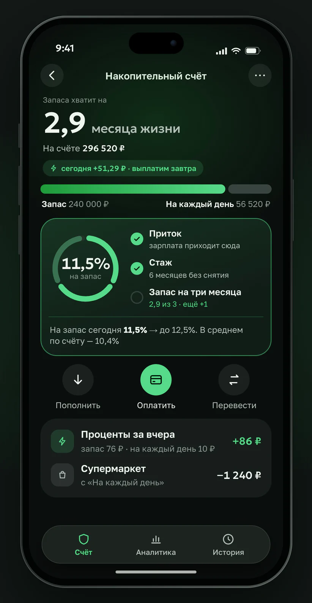

Запись прототипа: от оплаты до новой надбавки.
За декабрь ставка на запас выросла с 11,5% до 12,5%.

1
Источник — накопительный счёт, деньги на каждый день.
2
Запаса хватит на 2,9 месяца жизни. Две надбавки из трёх.
3
Счёт заработал 2 650 ₽. Остаток переезжает в запас.
4
Запаса хватает на три месяца — ставка выросла до 12,5%.
5
Шесть месяцев, дальше — вклад или фонд.
Запись прототипа версии 2, 26 секунд, идёт по кругу. Открыть кликабельный прототип